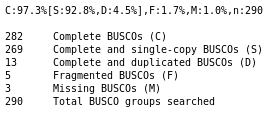

Genome annotation with Maker
OverviewQuestions:
Objectives:
How to annotate an eukaryotic genome?
How to evaluate and visualize annotated genomic features?
Requirements:
Load genome into Galaxy
Annotate genome with Maker
Evaluate annotation quality with BUSCO
View annotations in JBrowse
Time estimation: 4 hoursLevel: Advanced AdvancedSupporting Materials:Published: Sep 24, 2018Last modification: Feb 29, 2024License: Tutorial Content is licensed under Creative Commons Attribution 4.0 International License. The GTN Framework is licensed under MITpurl PURL: https://gxy.io/GTN:T00166rating Rating: 3.0 (1 recent ratings, 9 all time)version Revision: 14
Genome annotation of eukaryotes is a little more complicated than for prokaryotes: eukaryotic genomes are usually larger than prokaryotes, with more genes. The sequences determining the beginning and the end of a gene are generally less conserved than the prokaryotic ones. Many genes also contain introns, and the limits of these introns (acceptor and donor sites) are not highly conserved.
In this tutorial we will use a software tool called Maker Campbell et al. 2014 to annotate the genome sequence of a small eukaryote: Schizosaccharomyces pombe (a yeast).
Maker is able to annotate both prokaryotes and eukaryotes. It works by aligning as many evidences as possible along the genome sequence, and then reconciliating all these signals to determine probable gene structures.
The evidences can be transcript or protein sequences from the same (or closely related) organism. These sequences can come from public databases (like NR or GenBank) or from your own experimental data (transcriptome assembly from an RNASeq experiment for example). Maker is also able to take into account repeated elements.
Maker uses ab-initio predictors (like Augustus or SNAP) to improve its predictions: these software tools are able to make gene structure predictions by analysing only the genome sequence with a statistical model.
In this tutorial you will learn how to perform a genome annotation, and how to evaluate its quality. You will see how training ab-initio predictors is an important step to produce good results. Finally, you will learn how to use the JBrowse genome browser to visualise the results.
More information about Maker can be found on their website.
This tutorial was inspired by the MAKER Tutorial for WGS Assembly and Annotation Winter School 2018, don’t hesitate to consult it for more information on Maker, and on how to run it with command line.
Comment: Note: Two versions of this tutorialBecause this tutorial consists of many steps, we have made two versions of it, one long and one short.
This is the extended version. We will perform the complete training of ab-initio predictors and discuss the results in detail. If you would like to run through the tutorial a bit quicker and focus on the main analysis steps, please see the shorter version of this tutorial
AgendaIn this tutorial, we will cover:
Data upload
To annotate a genome using Maker, you need the following files:
- The genome sequence in fasta format
- A set of transcripts or EST sequences, preferably from the same organism.
- A set of protein sequences, usually from closely related species or from a curated sequence database like UniProt/SwissProt.
Maker will align the transcript and protein sequences on the genome sequence to determine gene positions.
Hands-on: Data upload
Create and name a new history for this tutorial.
To create a new history simply click the new-history icon at the top of the history panel:
Import the following files from Zenodo or from the shared data library
https://zenodo.org/records/4406623/files/S_pombe_chrIII.fasta?download=1 https://zenodo.org/records/4406623/files/S_pombe_genome.fasta?download=1 https://zenodo.org/records/4406623/files/S_pombe_trinity_assembly.fasta?download=1 https://zenodo.org/records/4406623/files/Swissprot_no_S_pombe.fasta?download=1 https://zenodo.org/records/4406623/files/augustus_training_1.tar.gz?download=1 https://zenodo.org/records/4406623/files/augustus_training_2.tar.gz?download=1
- Copy the link location
Click galaxy-upload Upload Data at the top of the tool panel
- Select galaxy-wf-edit Paste/Fetch Data
Paste the link(s) into the text field
Press Start
- Close the window
As an alternative to uploading the data from a URL or your computer, the files may also have been made available from a shared data library:
- Go into Data (top panel) then Data libraries
- Navigate to the correct folder as indicated by your instructor.
- On most Galaxies tutorial data will be provided in a folder named GTN - Material –> Topic Name -> Tutorial Name.
- Select the desired files
- Click on Add to History galaxy-dropdown near the top and select as Datasets from the dropdown menu
In the pop-up window, choose
- “Select history”: the history you want to import the data to (or create a new one)
- Click on Import
- Rename the datasets
Check that the datatype for
augustus_training_1.tar.gzandaugustus_training_2.tar.gzis set toaugustus
- Click on the galaxy-pencil pencil icon for the dataset to edit its attributes
- In the central panel, click galaxy-chart-select-data Datatypes tab on the top
- In the galaxy-chart-select-data Assign Datatype, select
augustusfrom “New type” dropdown
- Tip: you can start typing the datatype into the field to filter the dropdown menu
- Click the Save button

You have the following main datasets:
S_pombe_trinity_assembly.fastacontains EST sequences from S. pombe, assembled from RNASeq data with TrinitySwissprot_no_S_pombe.fastacontains a subset of the SwissProt protein sequence database (public sequences from S. pombe were removed to stay as close as possible to real-life analysis)S_pombe_chrIII.fastacontains only the third chromosome from the full genome of S. pombeS_pombe_genome.fastacontains the full genome sequence of S. pombe
Hands-on: Choose your Genome
You need to choose between
S_pombe_chrIII.fastaandS_pombe_genome.fasta:
- If you have time: use the full genome (
S_pombe_genome.fasta), it will take more computing time, but the results will be closer to real-life data.- If you want to get results faster: use the chromosome III (
S_pombe_chrIII.fasta).Rename the file you will use to
genome.fasta. E.g. if you are usingS_pombe_chrIII.fasta, rename it togenome.fa
- Click on the galaxy-pencil pencil icon for the dataset to edit its attributes
- In the central panel, change the Name field to
genome.fa- Click the Save button
The other datasets will be used later in the tutorial.
Genome quality evaluation
The quality of a genome annotation is highly dependent on the quality of the genome sequences. It is impossible to obtain a good quality annotation with a poorly assembled genome sequence. Annotation tools will have trouble finding genes if the genome sequence is highly fragmented, if it contains chimeric sequences, or if there are a lot of sequencing errors.
Before running the full annotation process, you need first to evaluate the quality of the sequence. It will give you a good idea of what you can expect from it at the end of the annotation.
Hands-on: Get genome sequence statistics
- Fasta Statistics ( Galaxy version 1.0.1) with the following parameters:
- param-file “fasta or multifasta file”: select
genome.fastafrom your history
Have a look at the statistics:
num_seq: the number of contigs (or scaffold or chromosomes), compare it to expected chromosome numberslen_min,len_max,len_N50,len_mean,len_median: the distribution of contig sizesnum_bp_not_N: the number of bases that are not N, it should be as close as possible to the total number of bases (num_bp)
These statistics are useful to detect obvious problems in the genome assembly, but it gives no information about the quality of the sequence content. We want to evaluate if the genome sequence contains all the genes we expect to find in the considered species, and if their sequence are correct.
CommentIf you chose to use only the chromosome III sequence (
S_pombe_chrIII.fasta), the statistics will be different. You will only see 1 contig.
BUSCO (Benchmarking Universal Single-Copy Orthologs) is a tool allowing to answer this question: by comparing genomes from various more or less related species, the authors determined sets of ortholog genes that are present in single copy in (almost) all the species of a clade (Bacteria, Fungi, Plants, Insects, Mammalians, …). Most of these genes are essential for the organism to live, and are expected to be found in any newly sequenced genome from the corresponding clade. Using this data, BUSCO is able to evaluate the proportion of these essential genes (also named BUSCOs) found in a genome sequence or a set of (predicted) transcript or protein sequences. This is a good evaluation of the “completeness” of the genome or annotation.
We will first run this tool on the genome sequence to evaluate its quality.
Hands-on: Run Busco on the genome
- Busco ( Galaxy version 4.1.4) with the following parameters:
- param-file “Sequences to analyse”: select
genome.fastafrom your history- “Mode”:
Genome- “Lineage”:
FungiCommentWe select
Fungias we will annotate the genome of Schizosaccharomyces pombe which belongs to the Fungi kingdom. It is usually better to select the most specific lineage for the species you study. Large lineages (like Metazoa) will consist of fewer genes, but with a strong support. More specific lineages (like Hymenoptera) will have more genes, but with a weaker support (has they are found in fewer genomes).
BUSCO produces three output datasets
- A short summary: summarizes the results of BUSCO (see below)
- A full table: lists all the BUSCOs that were searched for, with the corresponding status (was it found in the genome? how many times? where?)
- A table of missing BUSCOs: this is the list of all genes that were not found in the genome

QuestionDo you think the genome quality is good enough for performing the annotation?
The genome consists of the expected number of chromosome sequences (4, or 1 if you chose to annotate chromosome III only), with very few N, which is the ideal case.
If you used the full genome, most of the BUSCO genes are found as complete single copy, and very few are fragmented, which means that our genome have a good quality as it contains most of the expected content. That’s a very good material to perform an annotation. If you only analysed chromosome III, many BUSCO genes are missing, but still ~100 are found as complete single copy, and very few are found fragmented, which means that our genome have a good quality, at least on this single chromosome.
CommentIf you chose to use only the chromosome III sequence (
S_pombe_chrIII.fasta), the statistics will be different. The genome size will be lower, with only 1 chromosome. The BUSCO result will also show a lot of missing genes: it is expected as all the BUSCO genes that are not on the chromosome III cannot be found by the tool. Keep it in mind when comparing these results with the other BUSCO results later.
First Maker annotation round
Maker
For this first round, we configure Maker to construct gene models only by aligning ESTs and proteins to the genome. This will produce a first draft annotation that we will improve in the next steps.
Hands-on: First draft annotation with Maker
- Maker ( Galaxy version 2.31.11) with the following parameters:
- param-file “Genome to annotate”: select
genome.fastafrom your history- “Re-annotate using an existing Maker annotation”:
No- “Organism type”:
Eukaryotic- In “EST evidences (for best results provide at least one of these)”:
- “Infer gene predictions directly from all ESTs”:
Yes- param-file “ESTs or assembled cDNA”:
S_pombe_trinity_assembly.fasta- In “Protein evidences (for best results provide at least one of these)”:
- “Infer gene predictions directly from all protein alignments”:
Yes- param-file “Protein sequences”:
Swissprot_no_S_pombe.fasta- In “Ab-initio gene prediction”:
- “Prediction with Augustus”:
Don't use Augustus to predict genes- In “Repeat masking”:
- “Repeat library source”:
Disable repeat masking (not recommended)CommentFor this tutorial repeat masking is disabled, which is not the recommended setting. When doing a real-life annotation, you should either use Dfam or provide your own repeats library.
Maker produces three GFF3 datasets:
- The final annotation: the final consensus gene models produced by Maker
- The evidences: the alignments of all the data Maker used to construct the final annotation (ESTs and proteins that we used)
- A GFF3 file containing both the final annotation and the evidences
Annotation statistics
We need now to evaluate this first draft annotation produced by Maker.
First, use the Genome annotation statistics that will compute some general statistics on the annotation.
Hands-on: Get annotation statistics
- Genome annotation statistics ( Galaxy version 0.8.4) with the following parameters:
- param-file “Annotation to analyse”:
final annotation(output of Maker ( Galaxy version 2.31.11))- “Reference genome”:
Use a genome from history
- param-file “Corresponding genome sequence”: select
genome.fastafrom your history
Question
- How many genes where predicted by Maker?
- What is the mean gene locus size of these genes?
- 712 genes (503 for the chromosome III only)
- 1570 bp (1688bp for the chromosome III only)
Busco
Just as we did for the genome at the beginning, we can use BUSCO to check the quality of this first Maker annotation. Instead of looking for known genes in the genome sequence, BUSCO will inspect the transcript sequences of the genes predicted by Maker. This will allow us to see if Maker was able to properly identify the set of genes that Busco found in the genome sequence at the beginning of this tutorial.
First we need to compute all the transcript sequences from the Maker annotation, using GFFread ( Galaxy version 2.2.1.1). This tool will compute the sequence of each transcript that was predicted by Maker ( Galaxy version 2.31.11) and write them all in a FASTA file.
Hands-on: Extract transcript sequences
- GFFread ( Galaxy version 2.2.1.1) with the following parameters:
- param-file “Input GFF3 or GTF feature file”:
final annotation(output of Maker ( Galaxy version 2.31.11))- “Reference Genome”:
selectgenome.fastafrom your history
- “Select fasta outputs”:
fasta file with spliced exons for each GFF transcript (-w exons.fa)- “full GFF attribute preservation (all attributes are shown)”:
Yes- “decode url encoded characters within attributes”:
Yes- “warn about duplicate transcript IDs and other potential problems with the given GFF/GTF records”:
Yes
Now run BUSCO with the predicted transcript sequences:
Hands-on: Run BUSCO
- Busco ( Galaxy version 4.1.4) with the following parameters:
- param-file “Sequences to analyse”:
exons(output of GFFread ( Galaxy version 2.2.1.1))- “Mode”:
Transcriptome- “Lineage”:
Fungi
QuestionHow do the BUSCO statistics compare to the ones at the genome level?
Around 100 complete single-copy, and 650 missing. As the quality of this first draft is yey not very good, you should see better results after next rounds of Maker.
The statistics are not really satisfactory at this stage, but it’s normal: Maker only used the EST and protein evidences to guess the gene positions. Let’s see now how this first draft can be improved.
Ab-initio predictors first training
Maker can use several ab-initio predictors to annotate a genome. “Ab-initio” means that these predictors are able to predict the structure of genes in a genome based only on its sequence and on a species-specific statistical model. They don’t use any evidence (e.g. EST or proteins) to predict genes, but they need to be trained with a set of already predicted genes.
Maker is able to use the EST and protein evidences, and to combine them with the result of several ab-initio predictors to predict consensus gene models. It allows to detect genes in regions where no EST or protein align, and also to refine gene structures in regions where there are EST and/or protein evidences and ab-initio predictions.
We will use two of the most widely used ab-initio predictors: SNAP and Augustus. Before using it within Maker, we need to train them with the first annotation draft we produced in the previous steps. We know the quality of this draft is not perfect, but only the best scoring genes (ie the ones having the strongest evidences) will be retained to train the predictors.
Hands-on: Train SNAP
- Train SNAP ( Galaxy version 2013_11_29+galaxy1) with the following parameters:
- param-file “Genome to annotate”: select
genome.fastafrom your history- param-file “Maker annotation to use for training”:
final annotation(output of Maker ( Galaxy version 2.31.11))
Augustus is trained in a very similar way.
Hands-on: Train Augustus
- Train Augustus ( Galaxy version 3.3.3) with the following parameters:
- param-file “Genome to annotate”: select
genome.fastafrom your history- param-file “Annotation to use for training”:
final annotation(output of Maker ( Galaxy version 2.31.11))
Both SNAP and Augustus produce a statistical model representing the observed general structure of genes in the analysed genome. Maker will use these models to create a new annotation for our genome.
The Augustus training usually takes around 2 hours to complete, to continue this tutorial without waiting for the result, you can use the file augustus_training_1.tar.gz imported from Zenodo.
Second Maker annotation round
Maker
We need now to run a new round of Maker. As the evidences were already aligned on the genome on the first run, we can reuse these alignments as is. But this time, enable ab-initio gene prediction, and input the output of Train SNAP ( Galaxy version 2013_11_29+galaxy1) and Train Augustus ( Galaxy version 3.3.3) tools. We also disable inferring gene predictions directly from all ESTs and proteins: now we want Maker to infer gene predictions by reconciliating evidence alignments and ab-initio gene predictions.
Hands-on: Second draft annotation with Maker
- Maker ( Galaxy version 2.31.11) with the following parameters:
- param-file “Genome to annotate”: select
genome.fastafrom your history- “Organism type”:
Eukaryotic- “Re-annotate using an existing Maker annotation”:
Yes
- param-file “Previous Maker annotation”:
evidences(output of the previous Maker ( Galaxy version 2.31.11) run)- “Re-use ESTs”:
Yes- “Re-use alternate organism ESTs”:
Yes- “Re-use protein alignments”:
Yes- “Re-use repeats”:
Yes- In “EST evidences (for best results provide at least one of these)”:
- “Infer gene predictions directly from all ESTs”:
No- In “Protein evidences (for best results provide at least one of these)”:
- “Infer gene predictions directly from all protein alignments”:
No- In “Ab-initio gene prediction”:
- “SNAP model”:
snap model(output of Train SNAP ( Galaxy version 2013_11_29+galaxy1))- “Prediction with Augustus”:
Run Augustus with a custom prediction model
- param-file “Augustus model”:
augustus model(output of Train Augustus ( Galaxy version 3.3.3))- In “Repeat masking”:
- “Repeat library source”:
Disable repeat masking (not recommended)
Annotation statistics
Do we get a better result from Maker after this second run? Let’s run the same tools as after the first run, and compare the results.
Hands-on: Get annotation statistics
- Genome annotation statistics ( Galaxy version 0.8.4) with the following parameters:
- param-file “Annotation to analyse”:
final annotation(output of Maker ( Galaxy version 2.31.11) second run)- “Reference genome”:
Use a genome from history
- param-file “Corresponding genome sequence”: select
genome.fastafrom your history
Busco
Hands-on: Extract transcript sequences
- GFFread ( Galaxy version 2.2.1.1) with the following parameters:
- param-file “Input GFF3 or GTF feature file”:
final annotation(output of Maker ( Galaxy version 2.31.11) second run)- “Reference Genome”:
selectgenome.fastafrom your history
- “Select fasta outputs”:
fasta file with spliced exons for each GFF transcript (-w exons.fa)- “full GFF attribute preservation (all attributes are shown)”:
Yes- “decode url encoded characters within attributes”:
Yes- “warn about duplicate transcript IDs and other potential problems with the given GFF/GTF records”:
Yes
Now run BUSCO with the predicted transcript sequences:
Hands-on: Run BUSCO
- Busco ( Galaxy version 4.1.4) with the following parameters:
- param-file “Sequences to analyse”:
exons(output of GFFread ( Galaxy version 2.2.1.1))- “Mode”:
Transcriptome- “Lineage”:
Fungi
Question
- How does the second annotation compare to the previous one? Did the ab-initio predictors training improve the results?
- How do you explain these changes?
- The annotation looks much better: more BUSCO complete single-copy, and more genes
- Using ab-initio predictors allowed to find much more genes in regions where EST or protein alignments were not sufficient to predict genes.
Ab-initio predictors second training
To get better results, we are going to perform a second training of SNAP and Augustus, and then run Maker for a third (final) time.
Hands-on: Train SNAP and Augustus
- Train SNAP ( Galaxy version 2013_11_29+galaxy1) with the following parameters:
- param-file “Genome to annotate”: select
genome.fastafrom your history- param-file “Maker annotation to use for training”:
final annotation(output of Maker ( Galaxy version 2.31.11), second run)- “Number of gene model to use for training”:
"1000"- Train Augustus ( Galaxy version 3.3.3) with the following parameters:
- param-file “Genome to annotate”: select
genome.fastafrom your history- param-file “Annotation to use for training”:
final annotation(output of Maker ( Galaxy version 2.31.11), second run)
The Augustus training usually take around 2 hours to complete, to continue this tutorial without waiting for the result, you can use the file augustus_training_2.tar.gz imported from Zenodo.
Third (last) Maker annotation round
Maker
Let’s run the final round of Maker, in the same way as we did for the second run.
Hands-on: Final annotation with Maker
- Maker ( Galaxy version 2.31.11) with the following parameters:
- param-file “Genome to annotate”: select
genome.fastafrom your history- “Organism type”:
Eukaryotic- “Re-annotate using an existing Maker annotation”:
Yes
- param-file “Previous Maker annotation”:
evidences(output of the previous second Maker ( Galaxy version 2.31.11) run)- “Re-use ESTs”:
Yes- “Re-use alternate organism ESTs”:
Yes- “Re-use protein alignments”:
Yes- “Re-use repeats”:
Yes- In “EST evidences (for best results provide at least one of these)”:
- “Infer gene predictions directly from all ESTs”:
No- In “Protein evidences (for best results provide at least one of these)”:
- “Infer gene predictions directly from all protein alignments”:
No- In “Ab-initio gene prediction”:
- param-file “SNAP model”:
snap model(output of Train SNAP ( Galaxy version 2013_11_29+galaxy1))- “Prediction with Augustus”:
Run Augustus with a custom prediction model- param-file “Augustus model”:
augustus model(output of Train Augustus ( Galaxy version 3.3.3))- In “Repeat masking”:
- “Repeat library source”:
Disable repeat masking (not recommended)
Annotation statistics
Do we get a better result from Maker after this third run? Let’s run the same tools as after the first and second run, and compare the results.
Hands-on: Get annotation statistics
- Genome annotation statistics ( Galaxy version 0.8.4) with the following parameters:
- param-file “Annotation to analyse”:
final annotation(output of Maker ( Galaxy version 2.31.11) third run)- “Reference genome”:
Use a genome from history
- param-file “Corresponding genome sequence”: select
genome.fastafrom your history
Busco
Hands-on: Extract transcript sequences
- GFFread ( Galaxy version 2.2.1.1) with the following parameters:
- param-file “Input GFF3 or GTF feature file”:
final annotation(output of Maker ( Galaxy version 2.31.11) third run)- “Reference Genome”:
selectgenome.fastafrom your history
- “Select fasta outputs”:
fasta file with spliced exons for each GFF transcript (-w exons.fa)fasta file with spliced CDS for each GFF transcript (-x cds.fa)protein fasta file with the translation of CDS for each record (-y pep.fa)- “full GFF attribute preservation (all attributes are shown)”:
Yes- “decode url encoded characters within attributes”:
Yes- “warn about duplicate transcript IDs and other potential problems with the given GFF/GTF records”:
Yes
Now run BUSCO with the predicted transcript sequences:
Hands-on: Run BUSCO
- Busco ( Galaxy version 4.1.4) with the following parameters:
- param-file “Sequences to analyse”:
exons(output of GFFread ( Galaxy version 2.2.1.1))- “Mode”:
Transcriptome- “Lineage”:
Fungi
QuestionHow do the third annotation compare to the previous ones? Did the second ab-initio predictors training improve the results?
Depending on wether you annotated the full genome or only chromosome III, you should see nearly the same, or even less genes than in the previous Maker round. But you’ll notice that the number of multi-exon genes have increased. It means that in this third round, Maker was able to predict more complex genes, for example merging some genes that were considered separate beforehand.
Usually no more than two rounds of training is needed to get the best results from the ab-initio predictors. You can try to retrain Augustus and SNAP, but you will probably notice very few changes. We will keep the final annotation we obtained for the rest of this tutorial.
Improving gene naming
If you look at the content of the final annotation dataset, you will notice that the gene names are long, complicated, and not very readable. That’s because Maker assign them automatic names based on the way it computed each gene model. We are now going to automatically assign more readable names.
Hands-on: Change gene names
- Map annotation ids ( Galaxy version 2.31.11) with the following parameters:
- param-file “Maker annotation where to change ids”:
final annotation(output of Maker ( Galaxy version 2.31.11))- “Prefix for ids”:
TEST_- “Justify numeric ids to this length”:
6CommentGenes will be renamed to look like:
TEST_001234. You can replaceTEST_by anything you like, usually an uppercase short prefix.
Look at the generated dataset, it should be much more readable, and ready for an official release.
Visualising the results
With Galaxy, you can visualize the annotation you have generated using JBrowse. This allows you to navigate along the chromosomes of the genome and see the structure of each predicted gene.
Hands-on: Visualize annotations in JBrowse
- JBrowse ( Galaxy version 1.16.10+galaxy0) with the following parameters:
- “Reference genome to display”:
Use a genome from history
- param-file “Select the reference genome”: select
genome.fastafrom your history- “JBrowse-in-Galaxy Action”:
New JBrowse Instance- In “Track Group”:
- Click on “Insert Track Group”:
- In “1: Track Group”:
- “Track Category”:
Maker annotation- In “Annotation Track”:
- Click on “Insert Annotation Track”:
- In “1: Annotation Track”:
“Track Type”:
GFF/GFF3/BED Featuresparam-files “GFF/GFF3/BED Track Data”: select the final annotation of each Maker ( Galaxy version 2.31.11) run
Enable the three different tracks on the left side of JBrowse, then navigate along the genome and compare the three different annotations. You should see how Maker progressively produced more complex gene models.
QuestionNavigate to the position
NC_003421.2:143850..148763(meaning: on the sequence namedNC_003421.2(NCBI identifier for Chromosome III), between positions143850and148763).
- How did the annotation improved in this region after each Maker round?
- At the end of the first round, a first short gene model was predicted by Maker in this region. After the second round, Maker was able to predict a second gene model in this region. Notice the name of the model beginning with
snap_masked: it means that Maker used mainly a gene prediction from SNAP to construct this gene model. After the third round, the two genes were merged into a single one. Training Augustus and SNAP allowed to refine the gene structures and to refine the gene structures found in this region.

More visualisation
You might want to understand how a specific gene model was predicted by Maker. You can easily visualise the evidences used by Maker (EST alignments, protein alignments, ab-initio predictions, …) by using JBrowse too.
Hands-on: Visualize evidences in JBrowse
- JBrowse ( Galaxy version 1.16.10+galaxy0) with the following parameters:
- “Reference genome to display”:
Use a genome from history
- param-file “Select the reference genome”: select
genome.fastafrom your history- “JBrowse-in-Galaxy Action”:
Update existing JBrowse Instance- “Previous JBrowse Instance”: select the result from the previous JBrowse ( Galaxy version 1.16.10+galaxy0) run
- In “Track Group”:
- Click on “Insert Track Group”:
- In “1: Track Group”:
- “Track Category”:
Maker evidences- In “Annotation Track”:
- Click on “Insert Annotation Track”:
- In “1: Annotation Track”:
- “Track Type”:
GFF/GFF3/BED Features- param-files “GFF/GFF3/BED Track Data”: select the “evidences” output of each Maker ( Galaxy version 2.31.11) run
- “This is match/match_part data”:
Yes
You will now see new tracks displaying all the evidences used by Maker to generate consensus gene models.
Conclusion
Congratulations, you finished this tutorial! You learned how to annotate an eukaryotic genome using Maker, how to evaluate the quality of the annotation, and how to visualize it using the JBrowse genome browser.
What’s next?
After generating your annotation, you will probably want to automatically assign functional annotation to each predicted gene model. You can do it by using Blast, InterProScan, or Blast2GO for example.
An automatic annotation of an eukaryotic genome is rarely perfect. If you inspect some predicted genes, you will probably find some mistakes made by Maker, e.g. wrong exon/intron limits, splitted genes, or merged genes. Setting up a manual curation project using Apollo helps a lot to manually fix these errors. Check out the Apollo tutorial for more details.